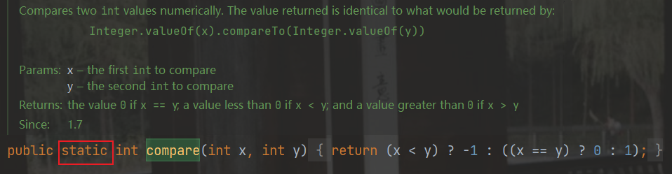
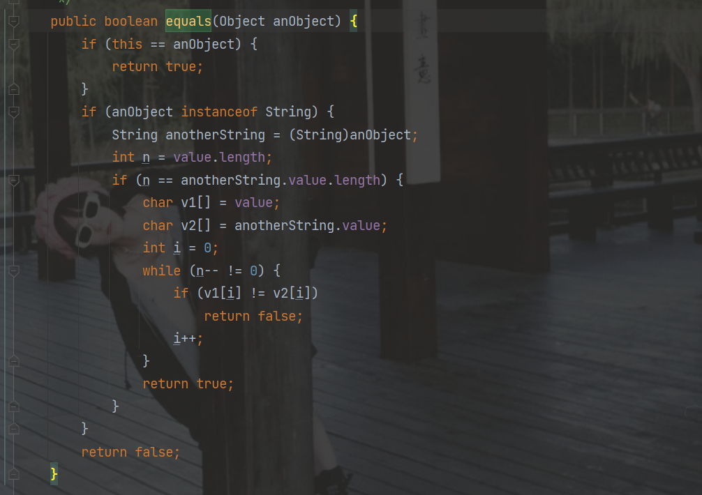
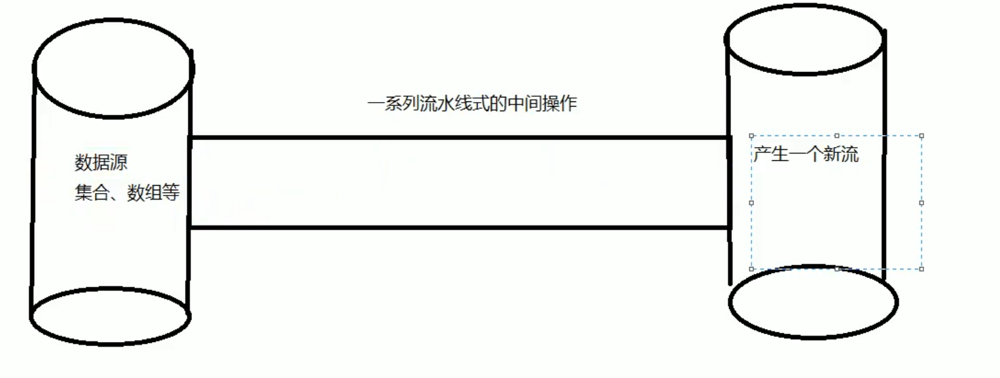
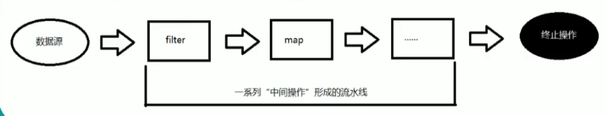
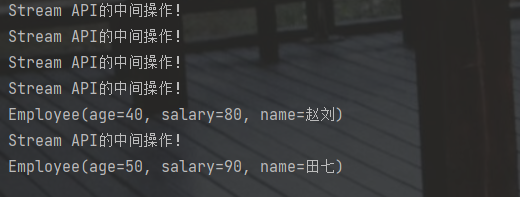
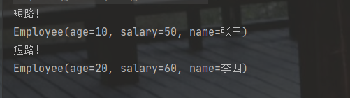
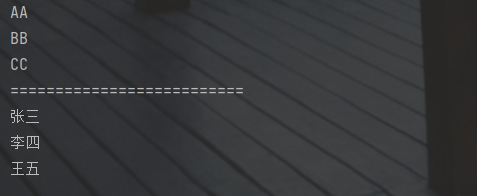

java 8
Lambda函数
Lambda是一个==匿名函数==，我们可以把Lambda表达式理解为是一段==可以传递的代码（将代码像数据一样传递）==。可以写出更简洁、更灵活的代码。作为一种更紧凑的代码风格，使java的语言表达能力得到了提升。
@Test
public void test01(){
Comparator<Intreger> com = Comparator<Integer>(){
@Override
public int compare(Integer o1,Integer o2){
return Integer.compare(o1,o2);
}
}
TreeSet<Integer> ts = new TreeSet<>(com);
}
// Lambda 表达式
@Test
public void test02(){
Comparator<Integer> com = (x,y) -> Integer.compare(x,y);
TreeSet<Integer> ts = new TreeSet<>(com);
}比如：有个集合存储了员工信息。
@Data
@ToString
@AllArgsConstructor
@NoArgsConstructor
public class Employee {
private Integer age;
private Integer salary;
private String name;
}
public class TestLambda {
List<Employee> list = Arrays.asList(
new Employee(10,50,"张三"),
new Employee(20,60,"李四"),
new Employee(30,70,"王五"),
new Employee(40,80,"赵刘"),
new Employee(50,90,"田七")
);
}如何将员工信息中工资，或年龄大于30的提取出来。
public interface MyPredicate<T>{
public boolean test(T t);
}
//方式一
@Test
public void test00(){
List<Employee> employees = new ArrayList<>();
for (Employee employee : list) {
if(employee.getAge() > 30){
employees.add(employee);
}
}
}
//优化方式二： 匿名内部类
@Test
public void test(){
List<Employee> employees = filterEmployee(list, new MyPredicate<Employee>() {
@Override
public boolean test(Employee employee) {
return employee.getAge() > 30;
}
});
employees.forEach(System.out::println);
}
//优化方式三：Lambda 表达式
@Test
public void test01(){
List<Employee> employees = filterEmployee(list, (e) -> e.getSalary() < 40);
employees.forEach(System.out::println);
}
//优化方式四：Stream API
@Test
public void test02(){
list.stream()
.filter((e) -> e.getSalary() > 30)
.limit(2)
.forEach(System.out::println);
System.out.println("====================================");
list.stream().map(Employee::getName).forEach(System.out::println);
}
public List<Employee> filterEmployee(List<Employee> list,MyPredicate<Employee> mp){
List<Employee> emps = new ArrayList<>();
for(Employee employee : list){
if(mp.test(employee)){
emps.add(employee);
}
}
return emps;
}Lambda 基础语法
java8 中引入了一个新的操作符“->” ，该操作符称为箭头操作符或Lambda操作符。
箭头操作符将Lambda表达式拆分为两部分。
左侧：Lambda 表达式中的参数列表
右侧：Lambda 表达式中所需执行的功能，即Lambda体
语法格式一
//语法格式一： 无参数，无返回值
//() -> System.out.println("hello Lambda !");
public class TestLambda02 {
@Test
public void test1(){
int num = 0; // jdk 1.7 之前。必须是final
Runnable r = new Runnable(){
@Override
public void run() {
System.out.println("hello world!"+ num);
//System.out.println("hello world!"+ num++); num++ 就报错。 默认 final int num = 0;
}
};
r.run();
System.out.println("================================");
Runnable r1 = () -> System.out.println("hello Lambda!");
r1.run();
}
}
语法格式 三
//语法格式二：有一个参数，并且无返回值
// (x) -> System.out.println(x);
@Test
public void test2(){
Consumer<String> con = (x) -> System.out.println(x);
con.accept("Lambda!!");
}
语法格式三
//语法格式三：若只有一个参数，并且无返回值，肖括号可以省略不写
// x -> System.out.println(x);
@Test
public void test2(){
Consumer<String> con = (x) -> System.out.println(x);
con.accept("Lambda!!");
}语法格式四
//语法格式四：有两个以上参数，有返回值，并且Lambda体中有多条语句。
@Test
public void test3(){
Comparator<Integer> com = (x,y) -> {
System.out.println("函数式接口");
return Integer.compare(x,y);
};
}语法格式五
//语法格式五：若Lambda体中只有一条语句。return 和 大括号都可以省略不写。
@Test
public void test4(){
Comparator<Integer> com = (x,y) -> Integer.compare(x,y);
}语法格式六
//语法格式六：Lambda表达式的参数列表的数据类型可以省略不写，因为jvm的编译器可以通过上下文推断出，数据类型。即“类型推断”。
(Integer x,Integer y) -> Integer.compare(x,y);Lambda 表达式需要“函数式接口”的支持
函数式接口：接口中只有一个抽象方法的接口，称为函数式接口。可以使用注解==@FunctionalInterface== 修饰
@FunctionalInterface
public interface MyFun {
public Integer getValue(Integer num);
}
@Test
public void test5() {
Integer num = operate(100,(x) -> x*x);
System.out.println(num);
System.out.println(operate(200,(y) -> y + 20));
}
public Integer operate(Integer num,MyFun mf) {
return mf.getValue(num);
}排序
public class TestLambda03 {
List<Employee> list = Arrays.asList(
new Employee(10,50,"张三"),
new Employee(20,60,"李四"),
new Employee(30,70,"王五"),
new Employee(40,80,"赵刘"),
new Employee(50,90,"田七")
);
//先按照年龄排序，再按照姓名排序
@Test
public void test1() {
Collections.sort(list, (e1, e2) -> {
if(e1.getAge() == e2.getAge()) {
return e1.getName().compareTo(e2.getName());
}else {
return Integer.compare(e1.getAge(), e2.getAge());
}
});
list.forEach(System.out::println);
}
}对字符串进行处理
@FunctionalInterface
public interface MyFunction {
public String getValue(String str);
}
//需求：用于处理字符串
@Test
public void test2() {
String str = strHandler("\t\t\t\t\t\t\t\t\t\t hello", (s) -> s.trim());
System.out.println(str);
System.out.println("-------------------------------");
String str2 = strHandler("hello", (s) -> s.toUpperCase());
System.out.println(str2);
System.out.println("-------------------------------");
String str3 = strHandler("hello", (s) -> s.substring(1, 3));
System.out.println(str3);
}
public String strHandler(String str,MyFunction mf) {
return mf.getValue(str);
}对两个Long型的数据进行处理
@FunctionalInterface
public interface MyFunction2<T,R> {
public R getValue(T t1,T t2);
}
@Test
public void test3() {
op(100L,200L,(l1,l2) -> l1 + l2);
op(100L,200L,(l1,l2) -> l1 * l2);
//需求：对于两个long类型的数字进行处理
public void op(Long l1,Long l2,MyFunction2<Long,Long> mf) {
System.out.println(mf.getValue(l1, l2));
}四大内置核心函数式接口
Consumer : 消费型接口( void accept(T t);)
//Consumer<T> 消费型接口
@Test
public void test01() {
happy(100, money -> System.out.println("消费了：" + money));
}
public void happy(double money, Consumer<Double> consumer) {
consumer.accept(money);
}
Supplier : 供给型接口(T get();)
//Supplier<T> 供给型接口
@Test
public void test02() {
List<Integer> numList = getNumList(10, () -> (int) (Math.random() * 100));
numList.forEach(System.out::println);
}
//需求：产生一些整数，并放入集合中
public List<Integer> getNumList(int num, Supplier<Integer> supplier) {
List<Integer> list = new ArrayList<>();
for (int i = 0; i < num; i++) {
list.add(supplier.get());
}
return list;
}Function : 函数型接口( R apply(T t);)
//Function<T, R> 函数型接口
@Test
public void test03() {
String s = strHandler("\t\t\t\t\t\thello", str -> str.trim());
System.out.println(s);
String s1 = strHandler("成果成大事", str -> str.substring(2));
System.out.println(s1);
}
//需求：用于处理字符串
public String strHandler(String str, Function<String, String> function) {
return function.apply(str);
}Predicate : 函数型接口（ boolean test(T t);）
//Predicate<T> 断言型接口
@Test
public void test04() {
List<String> list = Arrays.asList("hello", "world", "java","ok","www");
List<String> stringList = filterStr(list, s -> s.length() > 3);
stringList.forEach(System.out::println);
}
//需求：将满足条件的数据放入集合中
public List<String> filterStr(List<String> list, Predicate<String> predicate) {
List<String> stringList = new ArrayList<>();
for (String str : list) {
if (predicate.test(str)) {
stringList.add(str);
}
}
return stringList;
}方法引用与构造器引用
若Lambda 体中的内容有方法已经实现了，我们可以使用“方法引用”（可以理解为方法引用是Lambda 表达式的另外一种表现形式）
==注意==：
1，Lambda 体中调用方法的参数列表与返回值类型，要与函数式接口中的抽象方法的函数列表和返回值类型保持一致！
2，若Lambda 参数列表中的第一参数是实例方法的调用者，而第二个参数是实例方法的参数时，可以使用ClassName::method
主要有三种语法格式：
对象::实例方法名
//对象::实例方法名
@Test
public void test01() {
PrintStream out = System.out;
Consumer<String> consumer = (x) -> out.println(x);
Consumer<String> consumer2 = System.out::println;
consumer2.accept("Hello Lambda");
}
@Test
public void test02() {
Employee employee = new Employee();
Supplier<String> sup = () -> employee.getName();
System.out.println(sup.get());
Supplier<Integer> sup2 = employee::getAge;
System.out.println(sup2.get());
}类::静态方法名
//类::静态方法
@Test
public void test03() {
Comparator<Integer> comparator = (x, y) -> Integer.compare(x, y);
Comparator<Integer> com1 = Integer::compare;
}

类::实例方法名
//类::实例方法名
@Test
public void test04() {
BiPredicate<String, String> bp = (x, y) -> x.equals(y);
BiPredicate<String, String> bp2 = String::equals;
}
构造器引用
注意：需要调用的构造器的参数列表要与函数式接口中抽象方法的参数列表保持一致！
public Employee(Integer integer) {
this.age = integer;
}
public Employee(Integer integer, String s) {
this.age = integer;
this.name = s;
}
//构造器引用
@Test
public void test05() {
Supplier<Employee> sup = () -> new Employee();
Employee employee = sup.get();
//构造器引用
Supplier<Employee> sup2 = Employee::new;
Employee employee2 = sup2.get();
System.out.println(employee2);
}
@Test
public void test06() {
Function<Integer,Employee> fun = (x) -> new Employee(x);
Function<Integer,Employee> fun2 = Employee::new;
Employee employee = fun2.apply(10);
System.out.println(employee);
BiFunction<Integer,String,Employee> fun3 = Employee::new;
}数组引用
//数组引用
@Test
public void test07() {
Function<Integer,String[]> fun = (x) -> new String[x];
String[] apply = fun.apply(10);
System.out.println(apply.length);
Function<Integer,String[]> fun2 = String[]::new;
String[] apply2 = fun2.apply(20);
System.out.println(apply2.length);
}Steam
Stream是 Java8中处理集合的关键抽象概念，它可以指定你希望对集合进行的操作，可以执行非常复杂的查找、过滤和映射数据等操作。
使用Stream API对集合数据进行操作，就类似于使用SQL执行的数据库查询。也可以使用Stream API来并行执行操作。简而言之，Stream API提供了一种高效且易于使用的处理数据的方式。

流（Steam)到底是什么？
是数据渠道，用于操作数据源（集合、数组等）所生成的元素序列。==“集合讲的是数据，流讲的是计算”。==
注意：
- Steanm 自己不会存储元素
- Stream 不会改变源对象。相反，他们会返回一个持有结果的新Steam
- Stream 操作是延迟执行的。这意味着他们会等到需要结果的时候才执行。
Stream 的操作三个步骤

创建Stream
一个数据源（如：集合、数组），获取一个流
//1，可以通过Collection 系列集合提供的stream()或parallelStream()
List<String> list = new ArrayList<>();
Stream<String> stream = list.stream();
//2，通过Arrays 中的静态方法stream() 获取数组流
Employee[] employees = new Employee[10];
Stream<Employee> stream1 = Arrays.stream(employees);
//3，通过Stream类中的静态方法of()
Stream<String> stream2 = Stream.of("aa","bb","cc");
//4，创建无限流
//迭代
Stream<Integer> stream3 = Stream.iterate(0, x -> x + 2);
//生成
Stream<Double> stream4 = Stream.generate(() -> Math.random());中间操作
一个中间操作链，对数据源的数据进行处理
多个中间操作可以连接起来形成一个流水线，除非流水线上触发终止操作，否则中间操作不会执行任何的处理！而在终止操作时一次性全部处理，称为==“惰性求值”。==
筛选与切片
filter-接收Lambda，从流中排除某些元素
limit-截断流 ，使其元素不超过给定数量
skip(n)-跳过元素，返回一个扔掉前n个元素的流。若流中元素不足n个，则返回一个空流。与limit(n)互补
distinct-筛选，通过流所生成元素的hashCode()和equals()去除重复元素filter
//-接收Lambda，从流中排除某些元素
List<Employee> list = Arrays.asList(
new Employee(10,50,"张三"),
new Employee(20,60,"李四"),
new Employee(30,70,"王五"),
new Employee(40,80,"赵刘"),
new Employee(50,90,"田七")
);
//内部迭代：迭代操作由Stream API完成
@Test
public void test(){
//中间操作:不会执行任何操作(定义操作)
Stream<Employee> stream = list.stream().filter(e -> {
System.out.println("Stream API的中间操作！");
return e.getAge() > 30;
});
//终止操作：一次性执行全部内容(执行操作)
stream.forEach(System.out::println);
}
//外部迭代
@Test
public void test02(){
Iterator<Employee> iterator = list.iterator();
while (iterator.hasNext()){
System.out.println(iterator.next());
}
}满足条件就打印！

limit
//-截断流 ，使其元素不超过给定数量
@Test
public void test03(){
list.stream()
.filter(e -> {
System.out.println("短路！");
return e.getSalary() > 30;
})
.limit(2)
.forEach(System.out::println);
}
skip(n)
//-跳过元素，返回一个扔掉前n个元素的流。若流中元素不足n个，则返回一个空流。与limit(n)互补
@Test
public void test04(){
list.stream()
.filter(e -> e.getSalary() >30)
.skip(2)
.distinct()
.forEach(System.out::println);
}distinct
//筛选，通过流所生成元素的hashCode()和equals()去除重复元素
@Test
public void test04(){
list.stream()
.filter(e -> e.getSalary() >30)
.skip(2)
.distinct()
.forEach(System.out::println);
}Stream 映射
map—接收Lambda ，将元素转换成其他形式或提取信息。接收一个函数作为参数，该函数会被应用到每个元素上，并将其映射成一个新的元素。
@Test
public void test(){
List<String> list = Arrays.asList("aa", "bb", "cc");
list.stream()
.map(e -> e.toUpperCase())
.forEach(System.out::println);
System.out.println("==========================");
emps.stream()
.map(e -> e.getName())
.forEach(System.out::println);
}
flatMap—接收一个函数作为参数，将流中的每个值都换成另一个流，然后把所有流连接成一个流
@Test
public void test05(){
System.out.println("==========================");
Stream<Stream<Character>> streamStream = list.stream()
.map(TestStreamApi03::filterCharacter);
System.out.println("==========================");
Stream<Character> characterStream = list.stream()
.flatMap(TestStreamApi03::filterCharacter);
}
public static Stream<Character> filterCharacter(String str){
List<Character> list = new ArrayList<>();
for (Character ch : str.toCharArray()){
list.add(ch);
}
return list.stream();
}中间排序
sorted() - 自然排序(Comparable)
@Test
public void test06(){
List<String> list = Arrays.asList("ccc", "aaa", "bbb", "ddd", "eee");
list.stream()
.sorted()
.forEach(System.out::println);
}sorted(Comparator com) — 定制排序(Comparator)
@Test
public void test06(){
emps.stream()
.sorted((e1,e2) -> {
if (e1.getAge().equals(e2.getAge())){
return e1.getName().compareTo(e2.getName());
}else {
return e1.getAge().compareTo(e2.getAge());
}
})
.forEach(System.out::println);
}终止操作（终端操作）
一个终止操作，执行中间操作链，并产生结果
查找与匹配
/* allMatch—检查是否匹配所有元素 anyMatch——检查是否至少匹配一个元素 noneMatch—检查是否没有匹配所有元素 findFirst——返回第一个元素 findAny——返回当前流中的任意元素 count——返回流中元素的总个数 max——返回流中最大值 min——返回流中最小值 */
List<Employee> employees = Arrays.asList(
new Employee(10,50,"张三"),
new Employee(20,60,"李四"),
new Employee(30,70,"王五"),
new Employee(30,70,"王五wu"),
new Employee(40,80,"赵刘"),
new Employee(50,90,"田七"),
new Employee(50,90,"田七"),
new Employee(50,90,"田七")
);
@Test
public void test(){
boolean b1 = employees.stream()
.allMatch(e -> e.getAge() == 20);
System.out.println(b1);
boolean b2 = employees.stream()
.anyMatch(e -> e.getAge() == 20);
System.out.println(b2);
boolean b3 = employees.stream()
.noneMatch(e -> e.getAge() == 20);
System.out.println(b3);
Optional<Employee> first = employees.stream()
.sorted((e1, e2) -> Integer.compare(e1.getSalary(), e2.getSalary()))
.findFirst();
System.out.println(first.get());
Optional<Employee> any = employees.parallelStream()
.filter(e -> e.getAge() == 30)
.findAny();
System.out.println(any.get());
long count = employees.stream().count();
System.out.println(count);
Optional<Employee> max = employees.stream()
.max((e1, e2) -> Integer.compare(e1.getSalary(), e2.getSalary()));
System.out.println(max);
Optional<Employee> min = employees.stream()
.min((e1, e2) -> Integer.compare(e1.getSalary(), e2.getSalary()));
System.out.println(min);
Optional<Integer> min1 = employees.stream()
.map(Employee::getSalary)
.min(Integer::compare);
System.out.println(min1.get());
}归约
reduce(T identity,BinaryOperator) /reduce(BinaryOperator) — 可以将流中的元素反复结合起来，得到一个值
//reduce 归约
@Test
public void test02(){
List<Integer> integers = Arrays.asList(1, 2, 3, 4, 5, 6, 7, 8, 9, 10);
Integer reduce = integers.stream()
.reduce(0, (x, y) -> x + y);
System.out.println(reduce);
Optional<Integer> reduce1 = employees.stream()
.map(Employee::getSalary)
.reduce(Integer::sum);
System.out.println(reduce1.get());
}收集
collect—将流转换成其他形式。接收一个Collector接口的实现，用于给Stream中元素做汇总的方法。
Collector接口中的方法的实现决定了如何对流执行收集操作（如收集到List、set、Map)。但是==Collectors==使用类提供了很多静态的方法，可以方便的创建常见收集器实例。
@Test
public void test04(){
//总数
Long count = employees.stream()
.collect(Collectors.counting());
System.out.println(count);
System.out.println("------------------");
//平均值
Double avg = employees.stream()
.collect(Collectors.averagingDouble(Employee::getSalary));
System.out.println(avg);
System.out.println("------------------");
//总和
Double sum = employees.stream()
.collect(Collectors.summingDouble(Employee::getSalary));
System.out.println(sum);
//最大值
Optional<Employee> max = employees.stream()
.collect(Collectors.maxBy((e1, e2) -> Double.compare(e1.getSalary(), e2.getSalary())));
//最小值
Optional<Integer> min = employees.stream()
.map(Employee::getSalary)
.collect(Collectors.minBy(Integer::compare));
System.out.println(min);
}
//收集
@Test
public void test03(){
List<String> list = employees.stream()
.map(Employee::getName)
.collect(Collectors.toList());
list.forEach(System.out::println);
System.out.println("------------------");
Set<String> set = employees.stream()
.map(Employee::getName)
.collect(Collectors.toSet());
set.forEach(System.out::println);
System.out.println("------------------");
System.out.println("收集到指定的");
HashSet<String> hashSet = employees.stream()
.map(Employee::getName)
.collect(Collectors.toCollection(HashSet::new));
hashSet.forEach(System.out::println);
}分组
@Test
public void test05(){
Map<Integer, List<Employee>> map = employees.stream()
.collect(Collectors.groupingBy(Employee::getAge));
System.out.println(map);
System.out.println("=====================");
//多级分组
Map<Integer, Map<String, List<Employee>>> map2 = employees.stream()
.collect(Collectors.groupingBy(Employee::getSalary, Collectors.groupingBy(e -> {
if (e.getAge() < 40) {
return "青年";
} else {
return "中年";
}
})));
System.out.println(map2);
}
分区
@Test
public void test08(){
String collect = employees.stream()
.map(Employee::getName)
.collect(Collectors.joining(",","===","==="));
System.out.println(collect);
}
@Test
public void test07(){
DoubleSummaryStatistics collect = employees.stream()
.collect(Collectors.summarizingDouble(Employee::getSalary));
System.out.println(collect.getMax());
System.out.println(collect.getAverage());
System.out.println(collect.getCount());
System.out.println(collect.getSum());
}
@Test
public void test06(){
Map<Boolean, List<Employee>> collect = employees.stream()
.collect(Collectors.partitioningBy(e -> e.getSalary() > 60));
System.out.println(collect);
}并行流和顺序流
并行流就是把一个内容分成多个数据快，并用不同的线程分别处理每个数据块的流。
Optional 类
Option
类（java.util.Optional)是一个容器类，代表一个值存在或不存在，原来用null表示一个值不存在，现在Optional 可以更好的表达这个概念。并且可以避免空指针异常。
常用方法：
- Optional.of(T t)： 创建一个Optional 实例
- Optional.empty( )： 创建一个空的Optional 实例
- Optional.ofNullable(T t)： 若t不为null，创建Optional 实例，否则创建空实例
- isPresent()：判断是否包含值
- orElse(T t)：如果调用对象包含值，返回该值，否则返回t
- orElseGet(Supplier s)：如果调用对象包含值，返回该值，否则返回s获取的值
- map(Function f)：如果有值对其处理，并返回处理后的Optional，否则返回Optional.empty()
- flatMap(Fuction mapper)：与map类似，要求返回值必须是Optional
接口中的默认方法：
接口默认方法的“类优先”原则
public interface MyFun {
default String getName(){
return "成果";
}
}若一个接口中定义了一个默认的方法，而另一个父类或接口中又定义了一个同名的方法时：
选择父类中的方法。如果一个父类提供了具体的实现，那么接口中的具有相同名称和参数的默认方法会被忽略。
/*一个父类*/ public class MyClass { public String getName(){ return "成果成大事"; } } /*一个测试类 集成MyClass 同时实现MyFun的接口*/ public class SubClass extends MyClass implements MyFun{ } /*调用*/ public class TestDefaultInterface { public static void main(String[] args) { SubClass subClass = new SubClass(); System.out.println(subClass.getName()); } }
接口冲突。如果一个父接口提供了一个默认方法，而另一个接口也提供了一个具有相同名称和参数列表的方法（不管方法是否是默认方法），那么必须覆盖该方法来解决冲突。
public interface MyFun2 { String getName(); }